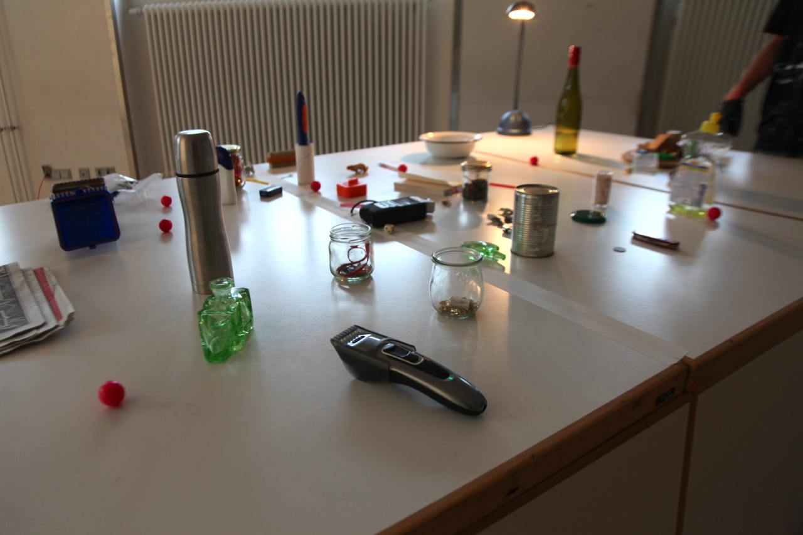
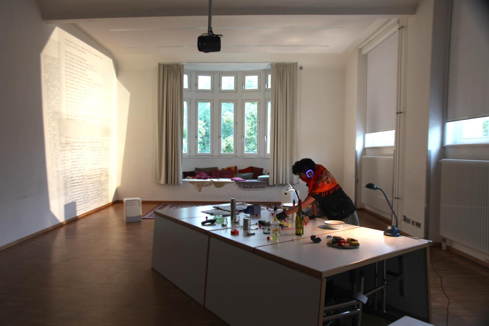

Experiment
Archiv der Erinnerungen
HfBK Dresden, Dresden 2020
Dieses Projekt zum „Archiv“ der Erinnerungen bezog sich auf das implizite Gedächtnis, den „verborgenen Schatz“ in uns. Durch den auditiven Kortex können Erinnerungen angestoßen werden, die mit einem emotionalen Moment verbunden sind. Meist geschieht dies individuell, da Musik bzw. Geräusche für jeden Menschen unterschiedlich konnotiert sind. Im Experiment der freien Gestaltung wurden Besucher*innen dazu eingeladen, selbst Geräusche mit Alltagsgegenständen zu erzeugen. Mithilfe des Live-Programms Ableton wurde der Klang auf den Kopfhörern derart verändert, dass für die Besucher*innen ein Moment des Entdeckens und die Möglichkeit, in eine andere Welt abzutauchen, entstand.
- 
- 